QUÍMICA II
La ciencia que conecta ideas
Clase 2: Estado Sólido y Redes Cristalinas
La ciencia que conecta ideas
Clase 2: Estado Sólido y Redes Cristalinas
En un sólido, las partículas (moléculas, átomos o iones) se unen con tal rigidez que prácticamente no tienen libertad de movimiento. Las partículas están:
La cantidad de espacio vacío en un sólido es menor que en un líquido; por ello, los sólidos son incompresibles y poseen forma y volumen definido. Con muy pocas excepciones (como el agua, donde el sólido es menos denso que el líquido), la densidad de los sólidos es mayor que la de los líquidos para una sustancia dada.
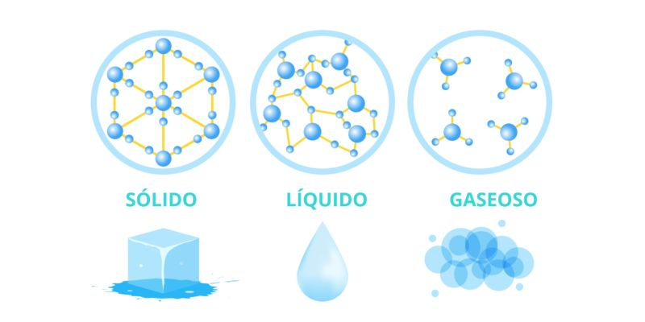
Figura 1: Disposición y movimiento de partículas en los tres estados de la materia.
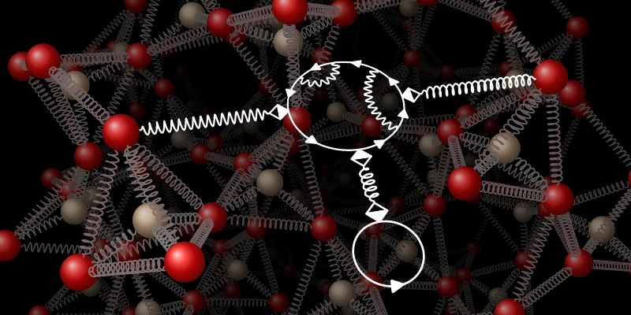
Figura 2: Movimiento vibracional en un sólido cristalino. Las partículas oscilan pero no cambian de posición.
Las propiedades físicas y estructurales de los sólidos se determinan por los tipos de enlaces que mantienen unidas a sus partículas. Existen dos grandes clases de sólidos:
Los átomos, iones o moléculas se empaquetan en un arreglo ordenado, ocupando posiciones específicas. Pueden ser sólidos covalentes (diamante), moleculares, metálicos e iónicos. Tienen formas geométricas definidas debido a que están ordenados según un patrón tridimensional definido denominado celda unitaria.
No presentan estructuras ordenadas, carecen de un ordenamiento bien definido. Una consecuencia directa de la disposición irregular es la diferencia de intensidad de las fuerzas intermoleculares, lo que hace que un sólido amorfo no tenga un punto de fusión definido, sino que dicha transformación acontece en un intervalo de temperatura. Cuando se calientan, se ablandan progresivamente aumentando su tendencia a deformarse.
| Característica | Sólidos Cristalinos | Sólidos Amorfos |
|---|---|---|
| Ordenamiento | Empaquetado ordenado en arreglo tridimensional. | Disposición irregular, sin orden definido. |
| Punto de Fusión | Preciso y bien definido. | Intervalo de temperatura (se ablanda). |
| Ejemplos | NaCl, Diamante, Cuarzo, Metales. | Vidrio, Plásticos, Polímeros. |
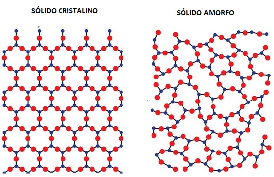
Figura 3: A la izquierda, red cristalina ordenada. A la derecha, estructura amorfa sin patrón geométrico.
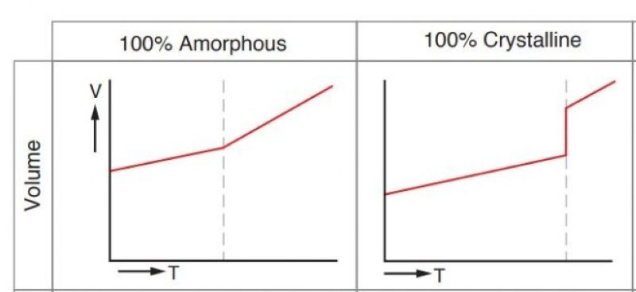
Figura 4: Comportamiento térmico. El cristalino funde a temperatura constante; el amorfo se ablanda gradualmente.
Mediante la técnica de difracción de Rayos X, se puede obtener información básica sobre las dimensiones y la forma geométrica de la celda unidad. La celda unitaria es la unidad estructural más pequeña que, repetida en las tres dimensiones del espacio, nos genera el cristal (red cristalina).
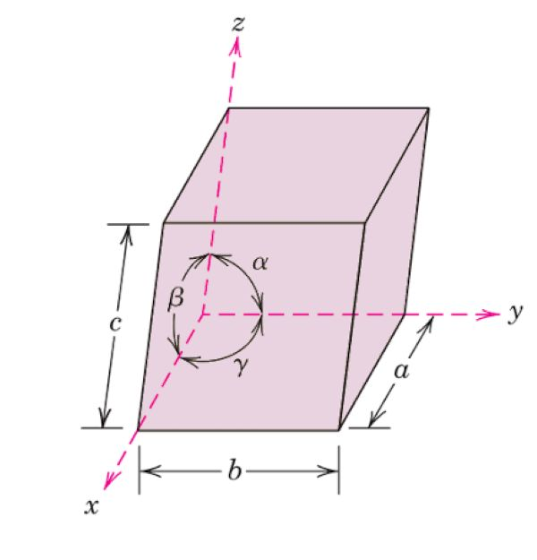
Figura 5: Celda unitaria genérica mostrando los ejes ($a, b, c$) y ángulos ($\alpha, \beta, \gamma$).
| Sistema | Relaciones de ejes | Ángulos |
|---|---|---|
| Cúbico | $a = b = c$ | $\alpha = \beta = \gamma = 90^\circ$ |
| Tetragonal | $a = b \neq c$ | $\alpha = \beta = \gamma = 90^\circ$ |
| Ortorrómbico | $a \neq b \neq c$ | $\alpha = \beta = \gamma = 90^\circ$ |
| Monoclínico | $a \neq b \neq c$ | $\alpha = \gamma = 90^\circ \neq \beta$ |
| Triclínico | $a \neq b \neq c$ | $\alpha \neq \beta \neq \gamma \neq 90^\circ$ |
| Hexagonal | $a = b \neq c$ | $\alpha = \beta = 90^\circ, \gamma = 120^\circ$ |
| Romboédrico | $a = b = c$ | $\alpha = \beta = \gamma \neq 90^\circ$ |
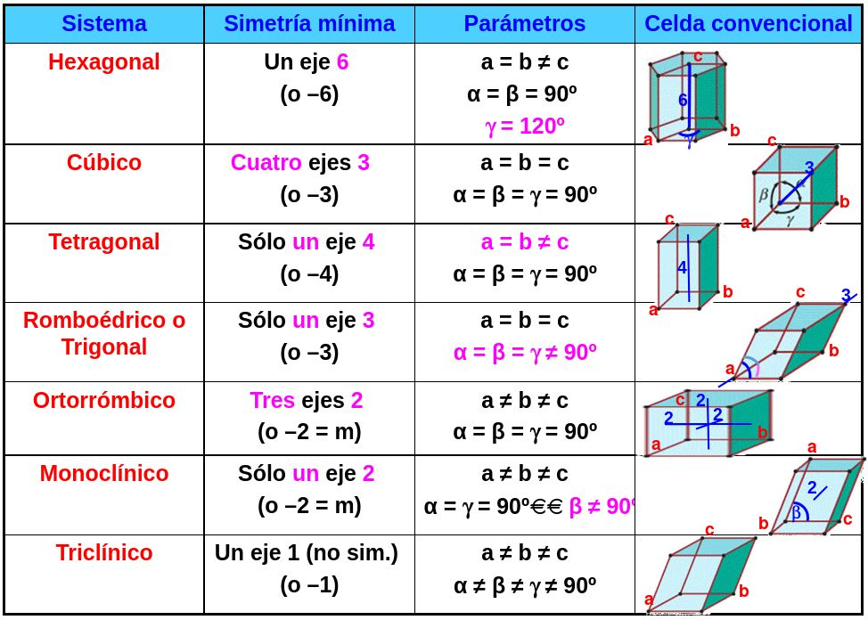
Figura 6: Las 14 redes de Bravais posibles en el espacio tridimensional.
Para calcular el número de iones en celdas como el $NaCl$ o el $Na_2O$, se considera qué fracción de cada partícula está dentro de los límites de la celda:
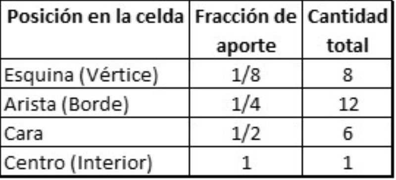
Figura 7: Fracción de átomo que aporta cada posición geométrica a la celda unitaria.
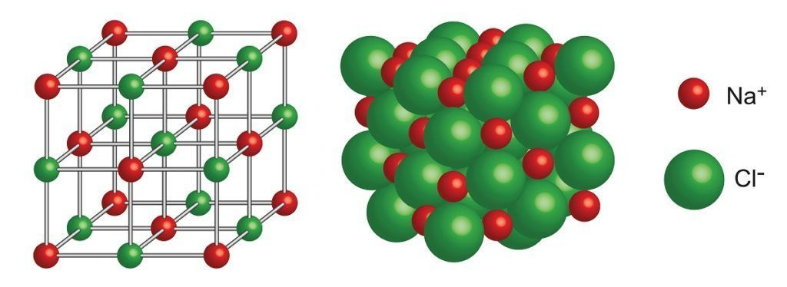
Figura 8: Red cristalina del $NaCl$. Iones $Na^+$ (pequeños) rodeados por iones $Cl^-$ (grandes) en estructura octaédrica.
Se puede establecer cualitativamente una relación entre los puntos de fusión de los sólidos iónicos teniendo en cuenta las fuerzas de Coulomb:
La magnitud de la energía de red de un sólido iónico depende de la carga de los iones. Por consecuencia, la energía de red aumenta conforme aumentan las cargas de los iones y conforme disminuyen sus radios (menor distancia $d$).
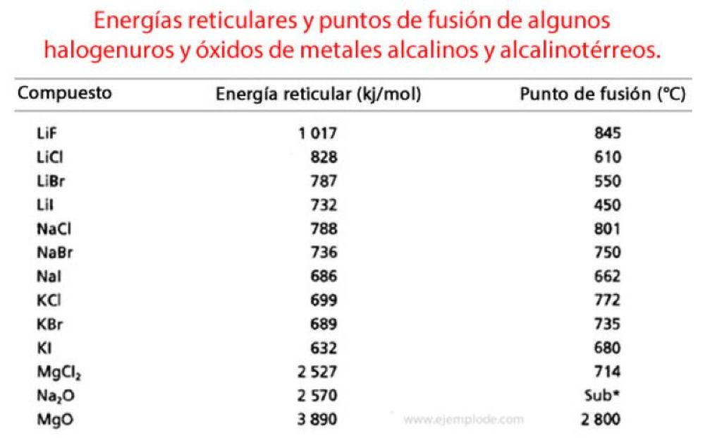
Figura 9: Mayor carga iónica ($Mg^{2+}O^{2-}$ vs $Na^+Cl^-$) resulta en mayor energía de red y punto de fusión.
El enlace en los metales es muy diferente al de otros tipos de cristales. Se puede considerar como una estructura de iones positivos inmersos en un mar de electrones de valencia deslocalizados. La gran fuerza cohesiva resultante de la deslocalización es la responsable de la resistencia mecánica de los metales.
La gran movilidad de los electrones deslocalizados explica que los metales sean buenos conductores del calor y la electricidad.
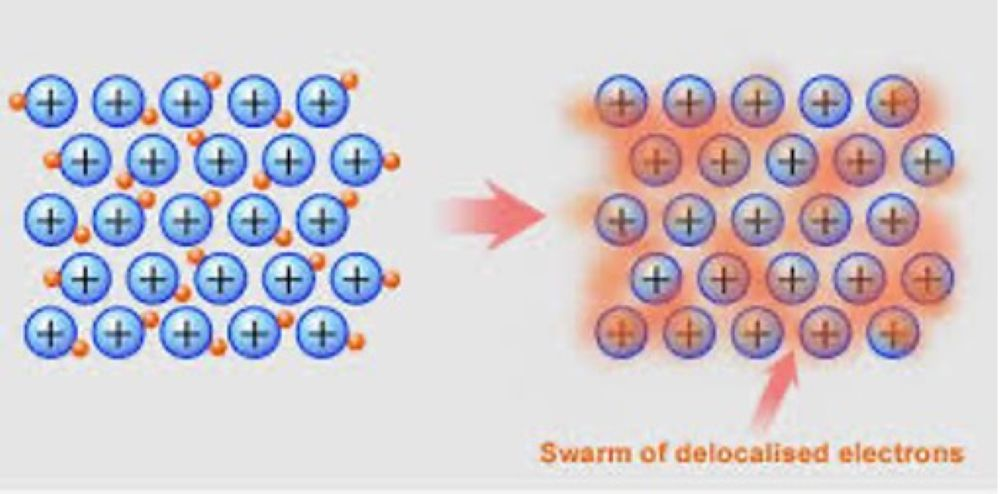
Figura 10: Modelo de "mar de electrones". Cationes rodeados de electrones deslocalizados que fluyen.
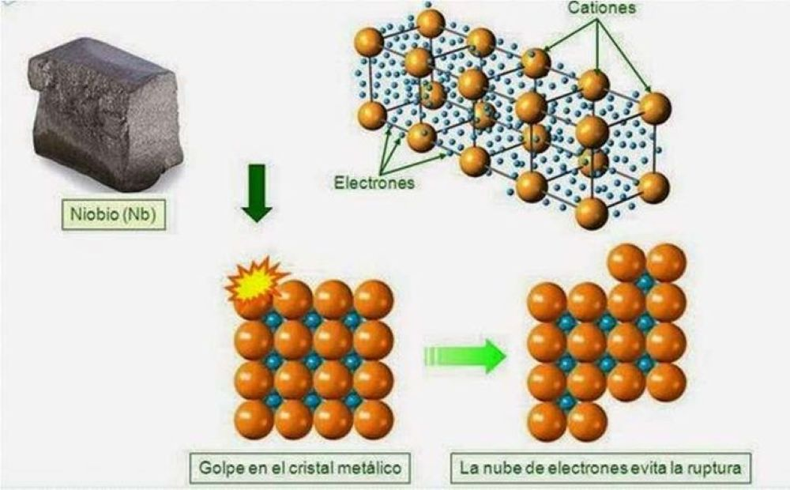
Figura 11: Los planos de cationes pueden deslizarse sin romper el enlace gracias al mar de electrones, permitiendo ductilidad.
En el diamante, cada átomo de carbono está enlazado covalentemente a 4 átomos de carbono en una estructura tetraédrica tridimensional. La fuerza del enlace covalente en 3D contribuye con la dureza característica del diamante.
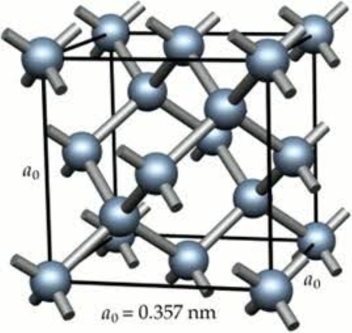
Figura 12: Red covalente del diamante. Cada carbono forma 4 enlaces covalentes perfectos.
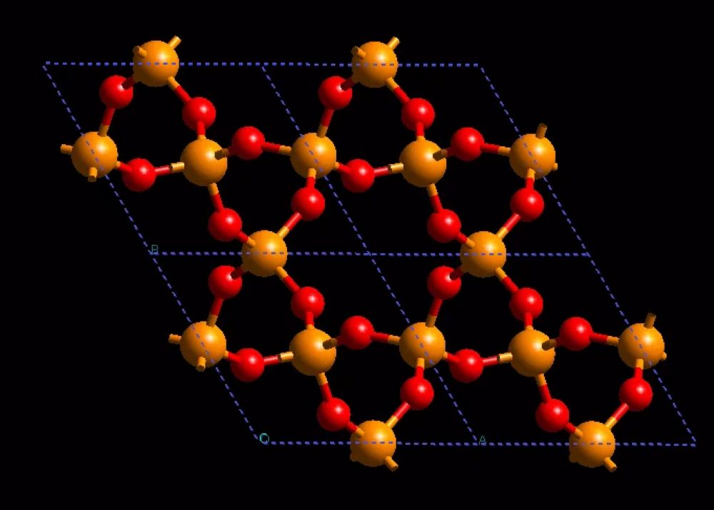
Figura 13: Red covalente del Cuarzo ($SiO_2$), alternando Silicio y Oxígeno.
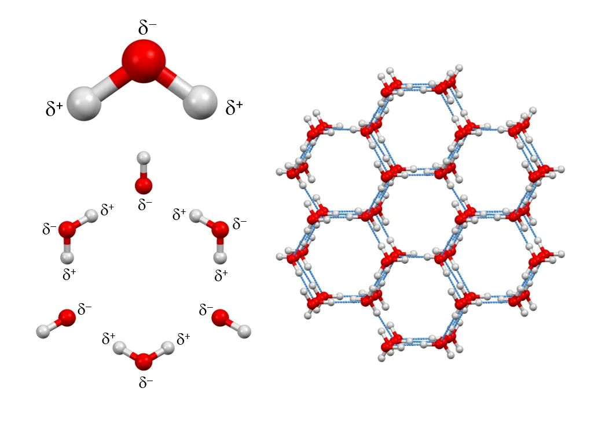
Figura 14: Cristal molecular de hielo. Las moléculas de $H_2O$ se mantienen unidas por puentes de hidrógeno.
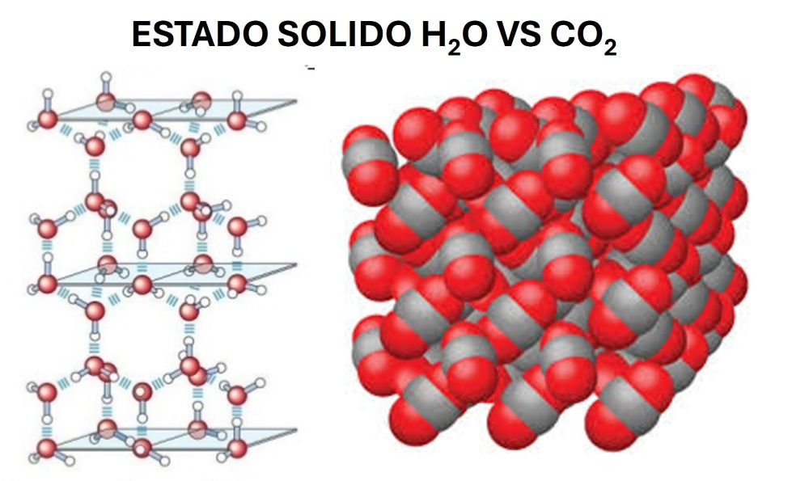
Figura 15: Diferencia en fuerzas intermoleculares. Izq: Hielo seco ($CO_2$, London). Der: Hielo de agua ($H_2O$, Puente de H).
Haz clic en cada nodo para desplegar u ocultar sus ramas.
Haz clic en la tarjeta para voltearla. Evalúa tu dominio con los botones de abajo.
Fórmula: $E = K \frac{q_1 q_2}{d}$
Haz clic en la posición del átomo para ver qué fracción de él pertenece a la celda unitaria.
Para recordar la fórmula de energía iónica $E = K \frac{q_1 q_2}{d}$, usa la frase: "Kilos de Queso 1 y Queso 2 sobre la Distancia". Recuerda que si las cargas crecen, la energía sube; si la distancia crece, la energía baja.
El error común es no saber qué fracción de átomo aporta cada posición. Recuerda que el átomo central es 1 (entero). De ahí, el número de celdas que comparten el átomo es la inversa de la secuencia 2, 4, 8:
Para recordar que existen 7 sistemas y 14 redes de Bravais, usa la regla del "3-3-1" para los ángulos de 90°:
Es una afirmación a medias. En estado sólido los iones están fijos y no conducen. Sin embargo, al fundirlos o disolverlos, los iones quedan libres y se convierten en excelentes conductores.
El diamante ($C$) y el cuarzo ($SiO_2$) no son moléculas gigantes, sino redes covalenas infinitas. La glucosa ($C_6H_{12}O_6$) sí es una molécula discreta.